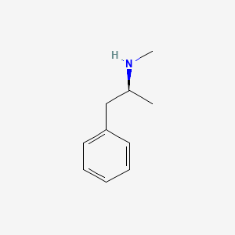

What Methanphetamine Does to Our Brain
An unresistable Notion
Methamphetamine has many effects on the brain. But what actually causes those effects? In this section, we will be going into detail on how meth actually affects the brain. To put it simply meth stimulates the production of chemicals in the brain. Though you can go so much deeper than that. What it actually does is help the transmission to catecholamines(adrenal neural transmitters). Specifically the transmitters responsible for noradrenaline, dopamine, and serotonin. Noradrenaline is primarily responsible for the loss of sleep. The dopamine and serotonin are primarily responsible for the high feelings of meth as well as the addiction piece. This leads to the sensitivity and synaptic concentration(amount of neurotransmitters) of these catecholamines. This results in the brain stimulating these chemicals' production and being more receptive to them. That is what causes meth to be more addictive than drugs like Adderal. It is also what causes meth to be more dangerous than most other CNS stimulants. So now that we know what meth actually does and why we can move on the the chemical structure of meth.
The Chemicals Present in Methanphetamine
A Dangerous Concoction
Methamphetamine was the chemical structure C10H15N. That is what meth is actually comprised of. Though the important thing we will be looking at in this section is what makes meth different from other amphetamines. Meth is a distant cousin of most other amphetamines. Though the primary difference between it and similar substances is that methyl replaces some of the chemicals in what would otherwise be amphetamine. This is how it differs from most other amphetamines because they are comprised of dextroamphetamine and levoamphetamine which are enantiomers of each other. This means they are chemical opposites. When they are put together in a certain ratio with dextroamphetamine sulfate and a couple of other amphetamines they create drugs like Adderal. While the effects may be similar to other CNS stimulants the methyl in meth makes it far more dangerous and addictive.
Getting Help

There are many ways to get help. Howevery meth has a very low recovery rate. So the best option is almost always to not use at all. Howevery, if help is required it usually costs $5,000$-10,000 a month for out of house treatment. Or around $30,000 a month for in-house treatment. Even then success rate is very low.
Popular Post
The articles above give more information and cited sources.